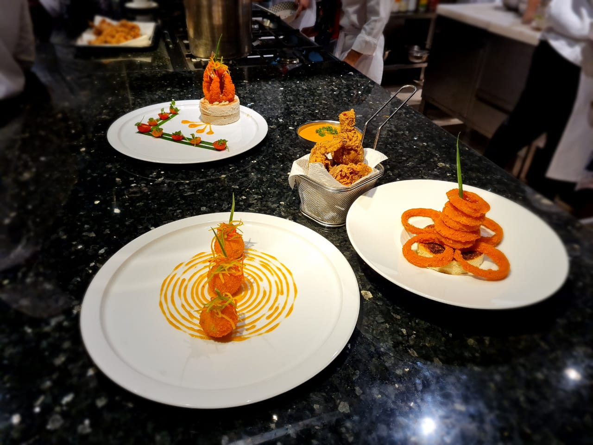
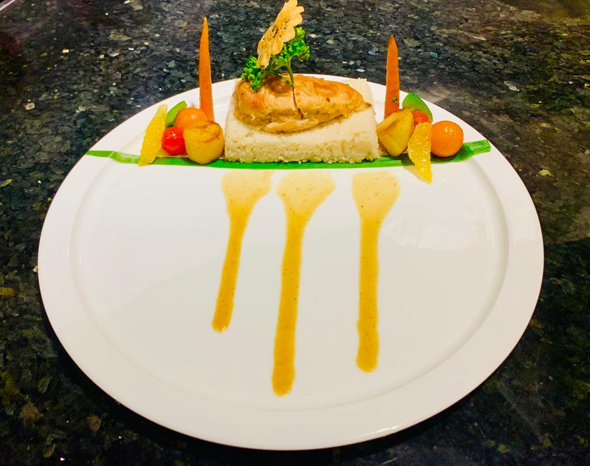
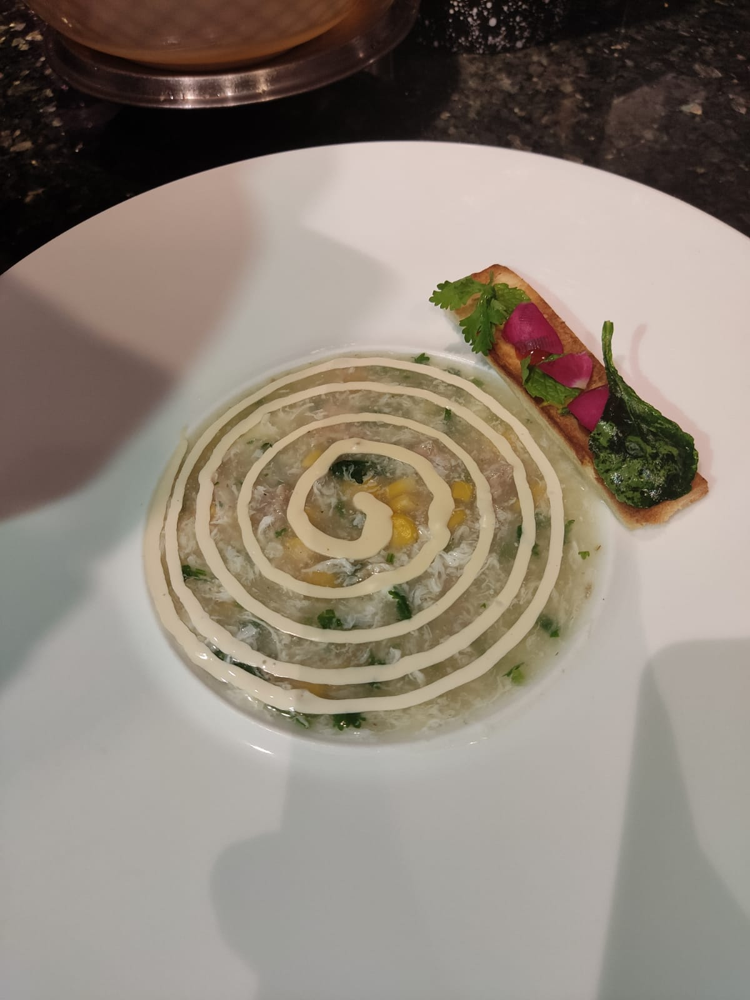

Work Experience
Assistant Cook — Kebab BD Special
Dec 2023 - Present | Poland
- Prepared ingredients including vegetables, meats, and sauces
- Assisted in grilling, frying, and basic cooking tasks
- Maintained cleanliness of kitchen equipment and workstations
- Ensured food safety and proper storage practices



Kitchen Hand — Imperial Hotel Bangladesh
Mar 2022 - Feb 2023 | Bangladesh
- Supported food preparation and kitchen operations
- Maintained hygiene and sanitation standards
- Assisted chefs with basic dishes and ingredient prep
- Completed cleaning and restocking tasks